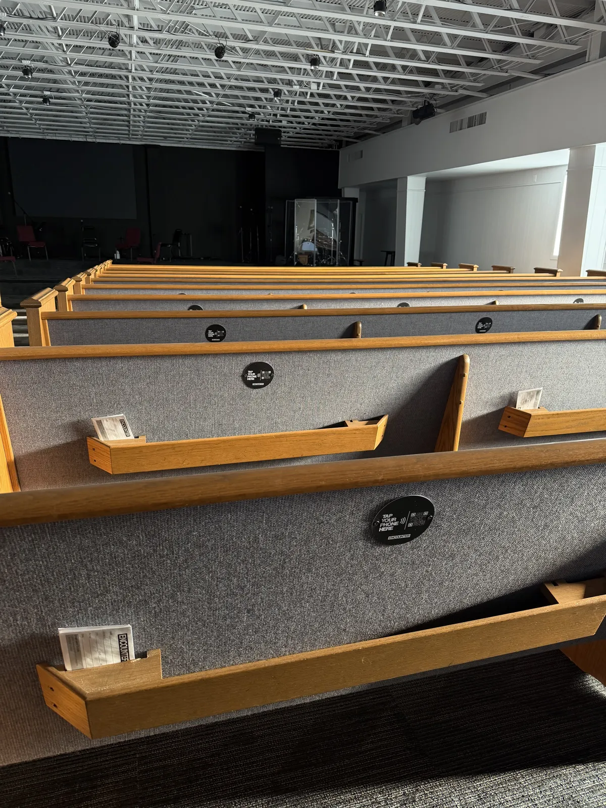

NFC Tap Plates vs. Connect Cards: Why the Offering Plate Wins
Churches have relied on connect cards for decades to capture visitor information. But during the offering moment, a paper card can’t do what a single phone tap can—collect a donation and contact info at the same time, in under three seconds.

1. The Connect Card Problem Nobody Talks About
Connect cards have been a staple in church pew racks for decades. The idea is simple: visitors write down their name, email, and phone number so the church can follow up. In theory, it’s a warm handshake in paper form. In practice, it’s a system full of quiet failures.
Most visitors never fill them out. Think about it from a first-time guest’s perspective. You’re in an unfamiliar environment, surrounded by people you don’t know, and someone hands you a small card and a half-working pen. You’re expected to write your personal information—name, phone number, email address—while the service continues around you. It feels awkward. It feels exposed. It feels like a sales form at a car dealership.
The cards that do get filled out introduce a new set of problems. Illegible handwriting means “Sarah” becomes “Sarai” in the database. Email addresses are misspelled. Phone numbers are missing a digit. And even the perfectly completed cards have to survive the journey from the pew to the church office—a path littered with lost cards, spilled coffee, and the bottom of someone’s Bible bag.
Then there’s the data entry. A volunteer sits down Monday morning with a stack of cards and manually types every name, every email, every prayer request into the church management system. It’s tedious, error-prone work—and here’s the real kicker: no giving happens from a connect card. It’s purely an information collection tool. The entire process captures zero dollars.
The Visitor Retention Reality
The national average shows that only 10–20% of first-time visitors return for a second visit. Connect cards were supposed to help close that gap through follow-up—but decades of data suggest they aren’t moving the needle. The problem isn’t the follow-up email. It’s that most visitors never hand you a card in the first place.
2. What Actually Happens During the Offering Moment
Let’s be honest about what the offering moment looks like for a first-time visitor. The pastor says a few words about generosity. Music plays. Ushers stand and begin passing plates down the rows.
The visitor watches. They don’t have cash—who carries cash anymore? They don’t know your church’s giving app. They’re not going to download a new app, create an account, and enter their credit card while the plate approaches their row. So the plate reaches them, they pass it along, and the moment is gone.
Meanwhile, the connect card sits in the pew rack. Maybe they noticed it. Maybe they didn’t. Even if they did, filling it out while the offering is happening feels disconnected—they’re doing paperwork while the rest of the congregation is participating in something meaningful.
Here’s the critical insight: the offering moment is 60–90 seconds long. That’s your window. Neither the empty plate passing by nor the card stuffed in the pew rack captures the giving impulse in that window. One is a container for cash nobody carries. The other is an information form that doesn’t involve giving at all.
The Digital Giving Gap
3. How NFC Tap Plates Replace Both—In One Motion
An NFC tap plate solves both problems simultaneously. The offering plate passes. The visitor sees others tapping their phones. They tap theirs. Their phone’s browser instantly opens your church’s giving page. They enter an amount, provide their name and email (required by most giving platforms to process the donation), and tap “Give.”
In that single action, two things happened that a connect card could never accomplish together: the visitor gave a donation AND provided their contact information. No pen required. No handwriting to decipher. No volunteer typing cards into a database on Monday morning. The giving platform automatically creates a donor record with verified, accurate data.
The whole thing takes about three seconds from tap to giving page. Compare that to 30+ seconds of fumbling with a pen and a connect card—and the card doesn’t even result in a donation.
Connect Card Experience
- 1 Find the card in the pew rack
- 2 Find a pen that works
- 3 Handwrite your name, email, and phone number
- 4 Place the card in the offering plate or basket
- 5 Hope someone can read your handwriting and types it correctly
Result: Contact info only. $0 donated. 30+ seconds.
NFC Tap Experience
- 1 Tap your phone on the offering plate
- 2 Enter your gift amount and submit
Result: Donation processed + contact info captured. ~3 seconds.

4. The Data Quality Advantage
Even when connect cards work as intended—when someone actually fills one out and it makes it to the church office intact—the data quality is often poor. Handwritten cards produce illegible names, misspelled email addresses, and phone numbers with missing digits. A volunteer squinting at a card on Monday morning trying to determine if that’s an “a” or an “o” is not a reliable data pipeline.
When a visitor gives through an NFC tap plate, the data is fundamentally different. The giving platform requires a verified email address—because the donor needs a receipt. The name is typed, not handwritten. The phone number is real because it’s tied to a payment method. And all of this data flows directly into your giving platform’s database automatically. No volunteer data entry. No transcription errors. No lost cards.
What Your Giving Platform Captures Automatically
Many giving platforms—Tithely, Subsplash, Planning Center, Pushpay, and others—also auto-sync donor records with your Church Management System (ChMS). That means a first-time visitor who taps the plate on Sunday morning can appear in Planning Center, Realm, or Breeze before the pastor finishes shaking hands at the door. No manual import. No CSV files. No “I’ll get to those cards this week” delays.
Connect Card Data
- Illegible handwriting
- Incomplete fields
- Manual data entry required
- Days-long processing delay
NFC Tap Plate Data
- Typed, verified email
- Complete donor record
- Auto-synced to your ChMS
- Instant—available in real time
5. The Psychology of the First Gift vs. the First Card
This is the section that changes how church leaders think about visitor engagement. There’s a well-documented psychological principle at work here: when someone gives money, they become invested. It’s not just generosity—it’s commitment. The act of giving creates a sense of belonging and ownership that a connect card simply cannot replicate.
A first-time visitor who gives $25 during the offering has skin in the game. They’ve made a decision that says, “This place matters to me.” Research on donor behavior shows that first-time donors are 3–5× more likely to return than someone who merely expressed interest. The gift isn’t just revenue—it’s a relational anchor.
Compare that to a connect card. Someone writes their name and email. There’s no financial commitment. No psychological investment. It’s a “maybe”—and most “maybes” don’t convert. The card triggers a follow-up email sequence, which triggers… usually nothing. The visitor may never open that email. They may not even remember the church’s name by Tuesday.
First Gift vs. First Card: The Impact
- Creates psychological investment
- 3–5× more likely to return
- Begins a giving relationship
- Donor feels they “belong”
- No financial commitment
- Low return probability
- Triggers a follow-up sequence that often fails
- Visitor may forget the church by Tuesday
Put simply: the gift is the beginning of a relationship. The card is the beginning of a follow-up sequence that probably won’t work. If your goal is visitor retention—and it should be—you want to convert that first visit into a first gift, not a first form.
6. “But We Need Contact Info for Follow-Up”
This is the most common objection, and it’s a fair one. Churches don’t just want donations—they want relationships. They want to send a welcome email, invite visitors to a newcomer’s lunch, and make people feel known. Connect cards were designed for exactly this purpose.
Here’s the thing: most giving platforms already collect the contact information you need. When someone donates through Tithely, Subsplash, Pushpay, or virtually any online giving platform, the donor provides their name and email at minimum. Many platforms also collect a phone number and mailing address. That’s the same information a connect card asks for—except it’s typed, verified, and automatically stored.
Some platforms even let you add custom fields to your giving form. Want to ask “How did you hear about us?” or “Is this your first visit?” You can add those questions directly to the giving page. The visitor answers them while completing their donation—no separate card needed.
Pro Tip: The “First-Time Visitor” Fund
Set up a designated fund in your giving platform called “First-Time Visitor Gift” or “Welcome Gift.” When someone selects it, your system can automatically trigger a welcome email, notify the connections pastor, and flag the donor for personal follow-up. One tap. One gift. One automated welcome sequence—no card, no data entry, no delay.
To be clear: connect cards aren’t inherently bad. They still serve a purpose for prayer requests, address updates, and non-giving interactions. But for the offering moment specifically—the 60–90 seconds when the plate passes—NFC tap plates outperform connect cards in every measurable way. They capture generosity and information in a single, frictionless action.
7. The Bottom Line: One Tap Does What Two Forms Can’t
Connect cards capture information. NFC tap plates capture generosity and information—in the same moment, with the same tap. One creates a follow-up task. The other creates a donor relationship.
The offering moment is too short and too important for paper forms. When a visitor is willing to give, you have about three seconds to make it possible. A connect card can’t do that. An NFC tap plate can.
For $450 (100 plates, one-time purchase), you replace an outdated paper system with a modern, frictionless experience that captures more donations, better data, and stronger visitor connections—all without a monthly fee, a new app, or a single volunteer typing cards on Monday morning.
Ready to Replace Paper with a Tap?
NFC tap plates capture donations and contact info in one motion. No monthly fees. No app required. Just plates that work.
Related Articles
First-Time Visitors to First-Time Givers
Turn Sunday guests into engaged donors with NFC tap-to-give plates and a frictionless first experience.
InsightsQR Codes vs NFC: Why Churches Are Switching
Compare QR code giving and NFC tap-to-give to see which technology wins for church offerings.
GuideHow to Launch NFC Giving at Your Church
A step-by-step guide to introducing NFC tap plates to your congregation and maximizing adoption.